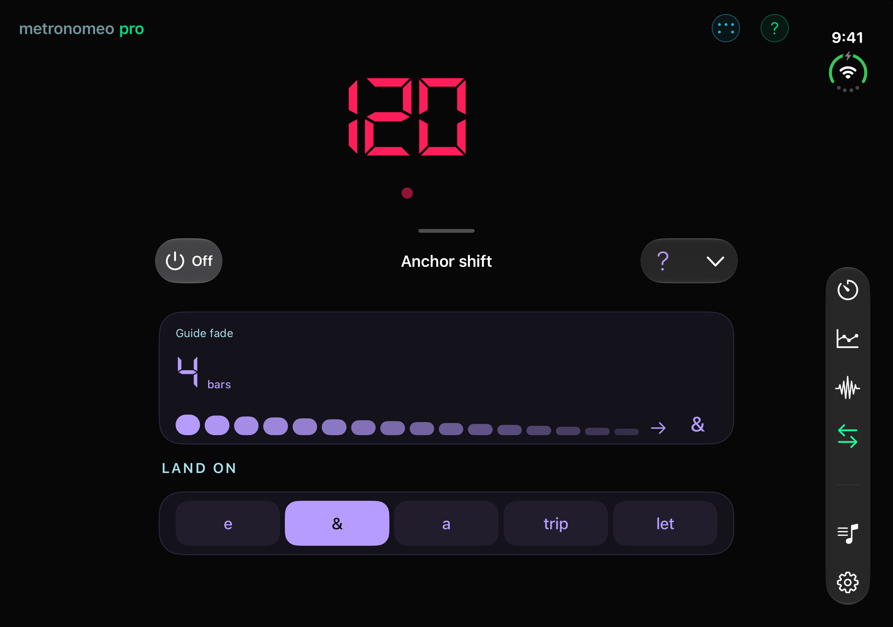

Anchor Shift: practice with the click between the beats
A metronome usually tells you where the beat is. Anchor Shift changes that relationship: the click sits inside the beat, and you keep track of the pulse around it. It is a useful challenge for drummers, but the same exercise works with a bass line, a guitar pattern, a piano phrase or a sustained wind part.
The goal is not to play everything later. Your part keeps its original timing. Only the reference click changes position. Start with an easy pattern, hear where the click belongs, and resist the urge to turn that click into a new beat one.
What actually moves?
Imagine counting “1 e & a” evenly over one quarter note beat. The number is the beginning of the beat. The e is one quarter of the way through, the & is halfway through, and the a is three quarters of the way through. An ordinary quarter note click lands on the number. A displaced click can land on any of those other positions.
At 60 BPM, a quarter note lasts one second. A click on & sits half a second after each beat. A click on e sits a quarter of a second after it. The tempo has not become faster or slower, and the bar still contains the same number of beats. You have changed the reference point, not the meter.
| Target | Count within a beat | Click position |
|---|---|---|
| e | 1 e & a | Second sixteenth |
| & | 1 e & a | Third sixteenth |
| a | 1 e & a | Fourth sixteenth |
| trip | 1 trip let | Second triplet |
| let | 1 trip let | Third triplet |
Triplets divide the beat into three equal parts. They are a different grid from the four equal parts of “1 e & a.” Establish the triplet feel before choosing trip or let; do not try to squeeze them into the sixteenth note spacing.
Why drummers use this kind of practice
When every click lands with your kick, hi hat or main pulse, matching it can become automatic. Moving the click creates a different listening task. You need to know where your own beat sits even when the sound in your ear points somewhere else.
For a drummer, try hearing the click between steady hi hat strokes while the kick and snare remain unchanged. For a bassist, keep the line grounded while the click falls between the notes. A pianist can keep both hands together without leaning on a click at each attack. The exercise is about maintaining a relationship, not proving that one instrument has better timing than another.
Offbeat metronome practice is an established teaching approach. Berklee’s Time and Rhythm 1 course includes metronome work on the beat, off the beat and with alternating audible and silent periods. Anchor Shift provides controls for exploring that approach inside Metronomeo.
Start with the &
Use this first exercise before trying the more closely spaced sixteenth note targets.
- Choose 4/4 and a comfortable tempo, such as 60 BPM. Play quarter notes or a basic groove you can repeat without thinking about the notes.
- Count “1 and 2 and 3 and 4 and” aloud. Keep the numbers steady. Make the ands exactly halfway between them.
- Open Anchor Shift, select & under Land on, and set Guide fade to four bars. Enable the tool.
- Use the guide to establish the ordinary beat as it fades. Keep counting the numbers in their original place while the displaced reference becomes your anchor.
- Continue for a short phrase. Then disable Anchor Shift and check whether the ordinary click meets your original beat.
Four bars is a starting setting, not a required dose. If you lose the pulse during the transition, lengthen the guide. Restart begins the guide fade again without stopping playback, so you can repeat the listening step before adding a difficult part.
Keep the music simple at first
For drums, use a steady hi hat pattern with a familiar kick and snare placement. Avoid fills until you can keep the same groove through the guide fade. Then add a one beat fill and listen for whether the next bar still begins in the same place.
For guitar or bass, repeat one note or a short pattern. Keep the articulation even rather than using a busy riff to hide uncertainty. For piano, begin with a single hand or a repeated chord. Add the other hand only when you can still count the original pulse comfortably.
Do not increase tempo and change the target at the same time. A harder target at a familiar tempo already changes the exercise substantially. Short, attentive repetitions give you clearer feedback than several minutes spent guessing where beat one went.
Move to e, a and triplet positions
Once & feels stable, return to the ordinary click and count sixteenths. Choose e or a and use the fading guide again. Notice the distance from the click to the next numbered beat. On a, the next beat is just one sixteenth away; on e, it is three sixteenths away. Hearing that distance can help you avoid relabeling the click as the pulse.
For triplet targets, first say “1 trip let, 2 trip let” over a steady beat. Select trip or let only once those three parts feel even. Play a simple part and let the reference sit between your main beats. Keep the straight and triplet exercises separate until each one makes sense on its own.
When the exercise falls apart
If every click starts sounding like beat one, stop adding notes. Count aloud, restart the guide and reestablish the numbers. If you can only stay oriented by staring at the screen, try a simpler pattern and listen before removing the visual reference.
If the music lurches when the guide disappears, you may be following the fading sound rather than holding the pulse. Use a longer fade and stay with quarter notes for another repetition. If the ordinary click surprises you when you return, treat that as feedback, not a cue to force the last note into place.
Closing the Anchor Shift panel only hides the editor. Use its power control to disable the exercise and return to the ordinary rhythm. This distinction matters when you move on to another practice task.
Anchor Shift or silent bars?
Anchor Shift keeps an audible reference but changes its position. Gap practice removes the audible reference for whole bars. Both ask you to carry more of the timekeeping yourself, but they test different relationships.
Practice them separately first. Use Anchor Shift when you want to hold the pulse against an offbeat reference. Use silent bars when you want to test continuity without an audible cue. Once both feel reliable, combining tools can be an interesting challenge, but a clear exercise is more useful than a complicated one you cannot evaluate.

Further reading: Berklee Online: Time and Rhythm 1.